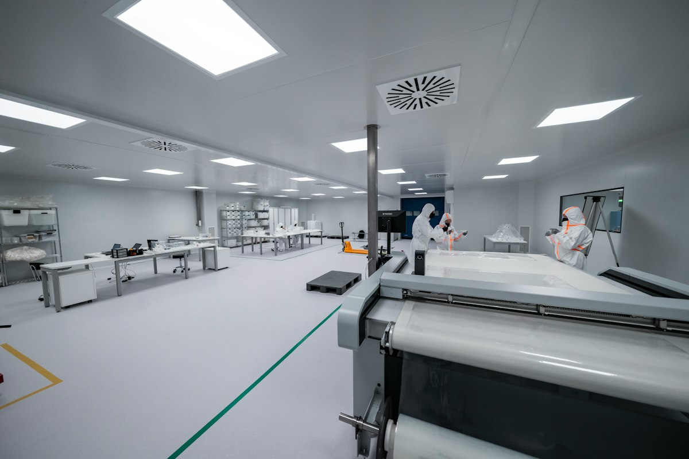

A New Hubble Frame Turns a Known Galaxy Into a Calibration Test
A repeat visit to a heavily photographed galaxy wins on one axis only, and that axis is measurement error.

What a headline carries
Phys.org published a Hubble story about the galaxy NGC 4394 on November 24, 2026. The headline promised that a new view raises the bar. That phrasing is a claim about measurement, and a bar goes up when a detector resolves something the earlier data left under the noise floor. Prettier is a different axis.
The argument here is narrow. A revisit of a well-known galaxy is an instrument story first, and the part worth reading is not visible in a press frame, because depth is the product. Everything else depends on an exposure list and a reduction pipeline that no headline can carry. The useful question is what a second visit makes measurable that a first visit did not.
Why a second look is the harder assignment
A galaxy that has been imaged many times is a bad target for a surprise. The bright structure is already in the literature. The position angle is already tabulated, and any new frame will agree with the old ones where the signal is strong. What changes at the edges is faint, statistical, and easy to fake with a nicer stretch. That agreement is the reason a repeat frame works as a control on the instrument rather than as a discovery report.
So the burden of proof flips. An image of an unknown galaxy is accepted on sight, while a revisit has to show its work. The bar in that headline reads like an error-budget bar. Depth is the one axis where a repeat visit can beat its own predecessor. A repeat visit also inherits every flaw in the original calibration, which is the point of doing it twice. Sharper optics would require a different machine.
What raising the bar buys
Depth buys specific things, and only one of them is photogenic. Depth is dull work. Faint resolution in the outer regions turns a smooth bulge into a measurable surface brightness profile, which is where structure and history are argued. Below the old noise floor, dim stars change the light budget and therefore the mass estimate built on it. Near a bright core, extra depth is mostly a cleaner background to subtract.
None of that requires a new telescope. It requires exposure time, and exposure time is bought with queue slots. The price shows up in data volume and in the patience of whoever writes the reduction. A deeper frame is a statement about a budget someone approved. Depth takes hours, and the budget is the news.
What depth does not buy
Deeper is not automatically more informative. A galaxy is a volume seen through one direction, and a longer exposure adds photons to that direction without opening another. Surface brightness profiles get tighter, ages get tighter, and the degenerate pairs stay degenerate. Nothing fixes geometry. That is one reason two groups can cite the same frame and still disagree in print. A deeper frame of the same sight line narrows the range of models, and narrowing is a slow kind of progress that no caption sells.
There is also a ceiling that has nothing to do with photons. A telescope above the atmosphere still has one mirror of fixed size and wells of fixed capacity. A bright core saturates while a faint arm keeps collecting. Depth and dynamic range argue back to back, and the caption reports the winner while the argument stays in the paper.
The strongest objection
There is a fair objection. Depth is a bad sales unit because the eye cannot honestly rank two stretches of the same field, and a press image is judged by eye. Contrast is a good sales unit, and contrast is a human decision made after the data closed. A frame can arrive deeper and duller at once.
The picture is a preview.
The objection lands and stops: marketing chooses the stretch on the way out, and the photons were decided long before, in the queue. A release claiming a raised bar invites an audit it cannot refuse, because mission array data is normally public and timestamped. Read the headline as a promise about a file, then go look at the file.
What the archive makes checkable
Some of this is checkable by an outsider, and that is the useful part. A mission image comes with a record: instrument, filters, exposure time per channel, and the reduction notes that turned raw arrays into a composite. That record is published because the mission has to publish it, and because the next group needs it. Those fields settle most arguments about what a frame can support. Two decide the depth claim outright.
Total exposure per filter is the first. Sky brightness and detector noise are steady, so depth grows with the square root of accumulated time. A raised bar with no extra time needs another story, and there are only a few good ones. Better calibration, cleaner background subtraction, or recombining older visits into a single stack. The second field is pixel scale, since a deeper picture of the same blurred object is still blurred. That is where resolution earns its place in a caption.
Where the unknown sits
A second unknown survives any frame. The supplied source gives a title, a URL and a date. That is all it has. It cannot say which instrument produced the frame, how long it integrated, or which filters were stacked. A re-reduction is a legitimate result and a terrible headline. Those questions belong to the source page, which is where the numbers are printed.
That limit is the shape of the job rather than an apology. An analyst holding only a title can still say what kind of claim was made and what would falsify it. Anyone who needs the measurement has to open the mission page, and that page answers all of it. Nothing here needs a subscription or a login. Publishers rarely reprint the exposure table, which is why the audit falls on the reader rather than on the wire.
How to read the next one
Practically, open the mission release rather than the summary and look for the exposure block. If total seconds per filter appear, the depth claim is testable by anyone holding the earlier data. If they do not, the claim is decorative and can be set aside. The summary site rarely carries that block, and the mission site usually publishes it. None of that requires credentials.
The other line worth hunting names what the depth is for. A team that says which structure became measurable has committed to something falsifiable. Precision is unfashionable. A team that says the galaxy looks sharper than ever has committed to nothing, and the difference shows up in a citation list. That gap is where optimism is cheap and the literature is expensive. A paper, by contrast, has to commit to a number and a method, which is the discipline a press image is exempt from.
A detail in the web address
The phys.org item carries a date inside its web address, which is the most useful habit science journalism kept. It lets a reader see that the frame landed the day before this piece was written. No paper has had time to disagree with it yet. The address also dropped the catalog number, so the slug ends in ngc and bar. The address was cut for length, and nothing in a slug is measured.
Small thing, but it is the only part of the item that can be checked without a login. The frame itself will be judged by people holding calibration files, and they will not need the headline. The date inside the address will still be readable tomorrow, and nothing else on the page will age as quietly.